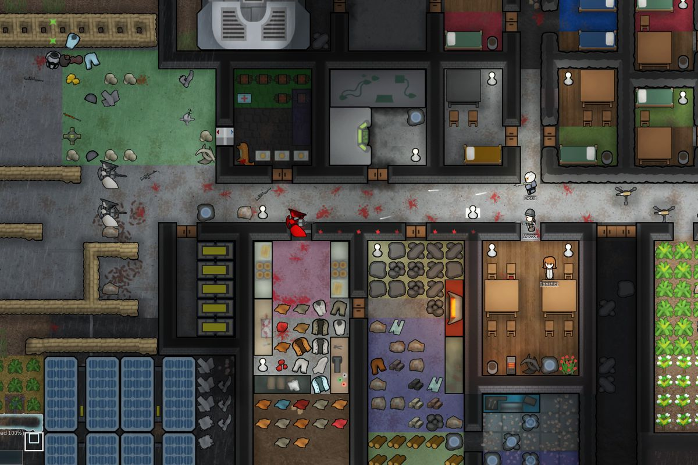

Description
 RimWorld is a sci-fi colony sim driven by an intelligent AI storyteller. Inspired by Dwarf Fortress, Firefly, and Dune.- You begin with three survivors of a shipwreck on a distant world.
- Manage colonists' moods, needs, wounds, illnesses and addictions.
- Build in the forest, desert, jungle, tundra, and more.
- Watch colonists develop and break relationships with family members, lovers, and spouses.
- Replace wounded limbs and organs with prosthetics, bionics, or biological parts harvested from others.
- Fight pirates, tribes, mad animals, giant insects and ancient killing machines.
- Craft structures, weapons, and apparel from metal, wood, stone, cloth, and futuristic materials.
- Tame and train cute pets, productive farm animals, and deadly attack beasts.
- Trade with passing ships and caravans.
- Form caravans complete quests, trade, attack other factions, or migrate your whole colony.
- Dig through snow, weather storms, and fight fires.
- Capture refugees or prisoners and turn them to your side or sell them into slavery.
- Discover a new generated world each time you play.
- Explore hundreds of wild and interesting mods on the Steam Workshop.
- Learn to play easily with the help of an intelligent and unobtrusive AI tutor.
Review
Would die from infection10/10